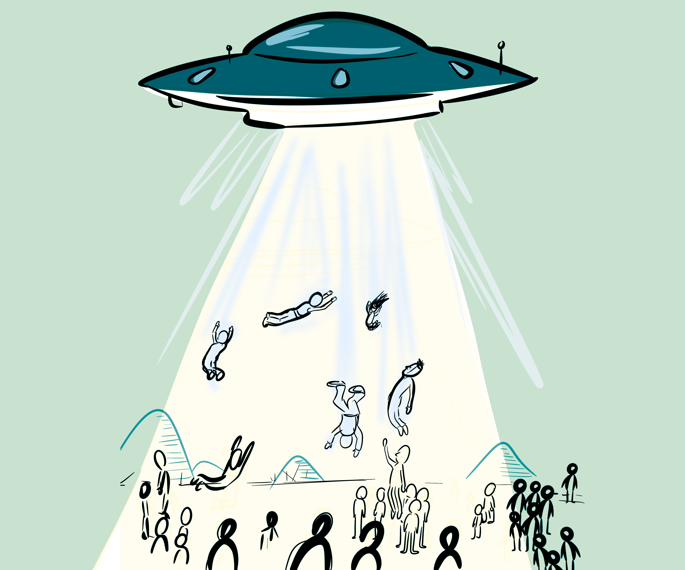

Projecting the Public
This page describes the methods, coding process, and code definitions used for Projecting the Public: A Framework for Constructing Empirical Visualization Studies of Broader Audiences. To browse the coded papers and filter the corpus, return to the main page.

Methods
Overview of corpus construction, inclusion criteria, and coding approach.
Corpus construction
We limited our search to four premier visualization venues: IEEE VIS, IEEE Transactions on Visualization and Computer Graphics (TVCG), Computer Graphics Forum (CGF), and visualization-related papers from the ACM CHI conference on Human Factors in Computing. Any publication that was published or appeared in these venues from 2020 to 2025 was considered. For VIS and TVCG, we only considered publications from 2020 to 2024 because our source Vispubdata did not have 2025 works as of download on November 18, 2025.
Selection process
To filter studies, we compiled a list of keywords starting from topics on the website Our World in Data, which archives visualizations and data related to societal, global issues—a rough proxy for public-facing visualizations. We then added words like "open data", "public", "museum", and "news media", as well as words describing general audiences like "casual user", "general public", or "non-expert", expanding on the search criteria used by Burns et al. (2023). We filtered for the presence of at least one of these keywords in the abstract, title, or paper-related keywords (as well as the word "visualization" for papers in CGF and CHI). Publications with the keyword "virtual reality", "augmented reality", "vr", or "ar" were excluded, as we were not interested in those settings.
Querying using just keyword criteria, we initially received 330 papers. The first two authors then independently conducted rounds of manual filtering to pick studies that satisfied additional criteria:
- Studies had to concern the impact of a visual or data representation on general audiences and have a means of eliciting responses from participants, inspired by Hullman et al. (2019).
- We were interested in visualizations intended to visually communicate meaning versus evaluating skills, and thus excluded studies of visualization literacy testing.
- Additionally, we excluded studies solely focused on tools or processes for visualization construction visualization (though this should be examined in future research).
Coding procedure
Inspired by Subramanian et al.’s systematic review of ecological validity guidelines, we coded the final 73 papers to understand the landscape of motivations and methods used, and to guide sampling for interviews. We coded each study with its methods and measures for the evaluation process and setting for experimental deployment, as well as the visualization's specified audience and role (as a communicative medium, analytic tool, etc.).
Code Definitions
Definitions for the codes used in the filterable table and Sankey diagram.
Specified audience
- General audience — Participants represent members of the general public, with varied or unknown data literacy.
- Specific publics/lived communities — Participants are publics defined by shared lived experiences or accessibility needs (e.g., screen reader users, disability communities, local or geographically bounded residents, advocacy groups).
Specified role of visualization
- Affective/reflective medium — Visualization is designed to evoke emotion, empathy, reflection, or attitudinal change—used for awareness-raising, social impact, or affective engagement.
- Analytic/reasoning tool — Visualization serves as a tool for supporting reasoning, decision-making, or analysis. Focus on usability, insight generation, workflow, or cognitive support.
- Communicative/explanatory medium — Visualization functions as a medium for communicating insights or narratives—explaining findings or supporting presentations.
- Learning tool — Visualization supports learning and education. Focus on comprehension, retention, or skill development.
- Perceptual/cognitive object — Visualization is treated as an object of perception—the study isolates visual encodings or perceptual judgments (e.g., accuracy, bias, ranking).
- Social/collaborative medium — Visualization facilitates social interaction and collaborative activity.
Evaluation setting
- Controlled laboratory study — Evaluation data are collected in a controlled lab or lab-like environment, with tightly specified tasks, stimuli, and conditions. Can be conducted remotely but maintains experimental control via online platforms.
- Embedded in personal routines — Evaluation data are collected as the visualization is integrated into individuals’ everyday personal routines or habits.
- Embedded in real workflows — Evaluation data are collected while the visualization is used within an existing professional, institutional, or civic workflow.
- In-the-wild/naturalistic public deployment — Evaluation occurs in real-world settings where participants encounter the visualization as part of everyday activity. Participants may encounter the visualization opportunistically in public or semi-public spaces.
- Simulated scenario/workflow — Evaluation uses a simulated scenario that mimics real-world context, stakes, or timelines without being a full deployment.
Evaluation measures
- Diary entries/experience sampling
- Free exploration/think-aloud
- Interaction log/trace data
- Interviews
- Observation/ethnographic methods
- Participant artifact production
- Physiological/behavioral sensing
- Surveys/questionnaires
- Task performance measures